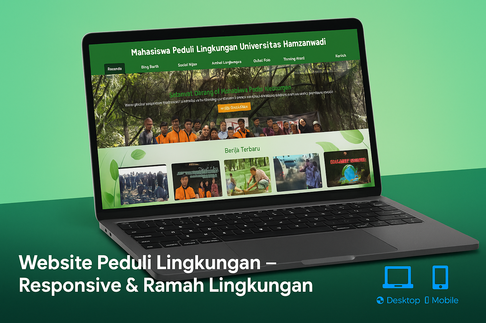

Deskripsi Proyek
Website Organisasi ini dikembangkan sebagai platform digital resmi untuk memperkenalkan visi, misi, program kerja, dan kegiatan dari suatu organisasi kepada publik secara lebih profesional dan terstruktur. Website ini bertujuan untuk meningkatkan transparansi, komunikasi, serta keterlibatan anggota dan masyarakat luas terhadap aktivitas organisasi.
Fitur Unggulan:
- 🏛️ Profil lengkap organisasi (visi, misi, sejarah, struktur)
- 📆 Kalender dan dokumentasi kegiatan organisasi
- 📰 Halaman berita atau pengumuman terbaru
- 🖼️ Galeri foto kegiatan
- 🌐 Desain responsif dan ringan untuk berbagai perangkatn